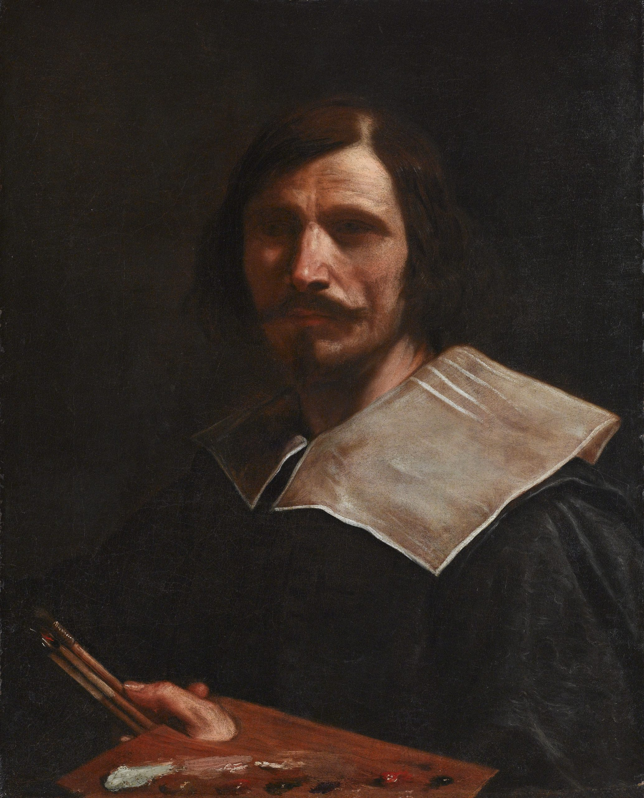

Nome completo: Giovanni Francesco Barbieri detto Guercino
Data di nascita e morte: 1591–1666
Luogo di nascita: Cento (Ferrara)
Attività principale: Pittore e disegnatore, attivo tra Bologna, Roma e Cento
Guercino fu uno dei massimi pittori del Seicento italiano. Citato frequentemente nei manoscritti di Oretti, le sue opere erano presenti in numerose collezioni nobiliari e cittadine bolognesi.